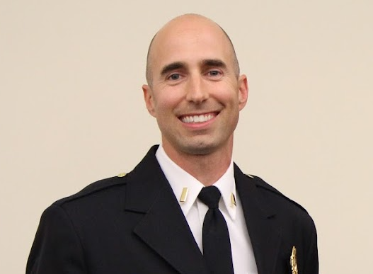

I lead primarily through action, doing the work well, and maintaining a steady presence in high-pressure situations. My leadership approach emphasizes efficiency, clear responsibilities, and a focus on core duties. I believe in fulfilling assigned tasks reliably and competently, while avoiding unnecessary distractions or overextension that can lead to burnout. I value a work environment where expectations are clear and performance is measured by meaningful outcomes, not visibility or excessive workload. I believe that consistency, remaining calm under pressure, and reliability can be as influential as formal authority. This approach helps foster trust among colleagues and provides a foundation for success for new-hires assigned to me.

Professional Goals
My primary goal is to continue serving as a reliable, steady contributor at Johnson County Med-Act through to my retirement. I intend to maintain consistently strong performance reviews, meet or exceed expectations in my daily work, and uphold the professionalism I’ve developed since beginning my EMS career in 2008.
Supporting the growth of newer team members is also a major focus for me. When I encounter new hires who show potential, I make it a personal goal to help them succeed whether that’s through informal mentorship, offering practical guidance, or assisting them through stage objectives. I aim to provide support to at least two or three new team members each year, with the goal of helping them feel confident, competent, and part of the culture we’ve worked hard to build.
Lastly, I aim to sustain my involvement in specialized roles like the Bike Medic Team and training department without overcommitting. To do this, I’ll regularly review how much time I spend on these tasks and adjust as needed, ensuring they enhance my role rather than overwhelm it.
Altogether, these goals reflect my commitment to finishing strong: mentoring others, solving problems, and continuing to be a reliable force within the organization.
Resume
Education & Transcripts
Bachelor of Science in Psychology
Kansas State University, Manhattan, KS — May 2006
Major: Psychology
Relevant Courses: Speech I and II, Psychology of Biology, Personality, Abnormal Psychology
Applied Sciences – Paramedic
Barton County Community College, Great Bend, KS — June 2011
Training focused on advanced patient assessment and treatment techniques in emergency medical settings.
Emergency Medical Technician Certifications
Salina Area Technical School, Salina, KS
EMT-Basic (National Certification) — July 2007
EMT-Intermediate (State Certification) — September 2009
Received training in rapid patient assessment, emergency care, and pre-hospital transport protocols.
Firefighter I & Hazmat Awareness
Kansas Fire & Rescue Training Institute, University of Kansas, Lawrence, KS — August 2006
National certification in fire suppression and hazardous materials recognition and management.
Academic Transcript
A viewable copy of my transcript is embedded below for reference.
Barton County Community College
Bicycle Medic Team
As the leader of the Johnson County Med-Act Bike Medic Team, I take great pride in supporting public safety at events where traditional vehicle access is limited. BMT provides medical coverage for race events within Johnson County, as well as fair stand-bys. We have started doing more public relations work which fell by the wayside post-COVID. As the group leader, I am responsible for staffing the events, recruitment, budgetting, training, and maintenance of the equipment. My goals with BMT moving forwards are:
1. Expand the team roster 2. Budget for, and obtain approval for acquisition of e-bikes 3. Offer at least 2 training sessions with CEs for team members annually.